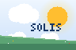
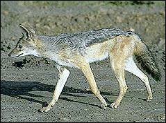

This page lives on the Solis disk, not on the network. Browser opened it
with a file:// address. It can render styled blocks, images,
section links, downloads, and a small amount of JavaScript.
Jump to Try this | Jump to Downloads
On the start page or in the address bar, type plain words such as
wikipedia or solar system and press Enter.
Browser shows a results page with links you can follow. Exact addresses
still work too.
wikipedia in the address bar and press Enter.file:///welcome.html to open this page again..html file.The script will replace this text.
Baseline JPEG is decoded directly by Browser, alongside BMP and PNG. This photograph is a JPEG image:

Public-domain sample photograph. The cards, colours, padding, rounded borders, and this muted sentence come from the stylesheet in this page's head.
Click a link with the download attribute, or press
Save / Ctrl+S, to copy the current page or file into
/home/downloads. Filenames are made safe and duplicates get a
numeric suffix.
You can follow a local link or head back to the web:
Solis Browser is deliberately small: text, a little CSS, BMP/PNG/JPEG images, web search, and a tiny JavaScript subset.